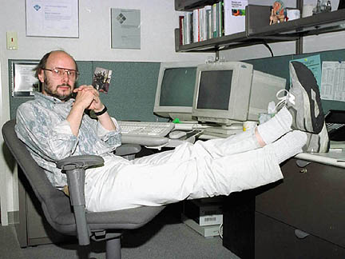

Интересые факты

Мог стать историком или архитектором:. Поступая в университет, Страуструп толком не знал, чем хочет заниматься. Он всерьез думал об архитектуре, истории или социологии, но в итоге выбрал математику и информатику просто потому, что посчитал это практичным.
Один из немногих self-made ученых: Будущий создатель C++ вырос в бедной семье и ходил в обычную провинциальную школу. В детстве он подрабатывал обычным разносчиком газет и молока.
Сам не знает C++ целиком: Страуструп не раз признавался в интервью, что современный C++ стал настолько огромным и сложным, что даже он сам не помнит все его нюансы и тонкости.
Борьба с глобальным потеплением: На вопрос об эффективности C++ Страуструп полушутя отмечает, что высокая скорость выполнения кода и низкое потребление энергии программами на C++ (по сравнению с ресурсоемкими языками) на самом деле вносят вклад в защиту климата, так как дата-центры тратят меньше электричества.
Фейковое интервью: В интернете много лет циркулирует знаменитое юмористическое «интервью», в котором Страуструп якобы признается, что придумал C++ как злую шутку, чтобы усложнить жизнь программистам и поднять им зарплаты. Разумеется, это старый сатирический розыгрыш, к которому сам ученый относится с иронией.
Редчайшее признание на родине: В 2025 году Страуструп был включен в датский биографический справочник Kraks Blå Bog (аналог британского Who's Who). Это исключительная редкость для представителей компьютерных наук — обычно туда попадают только члены королевской семьи, крупные политики и деятели классического искусства.